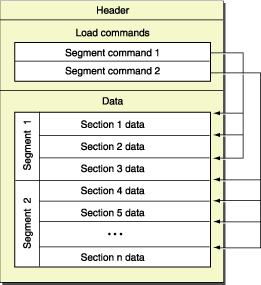
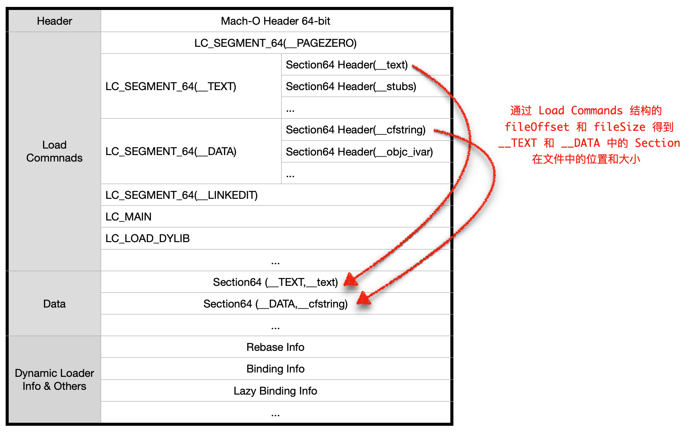
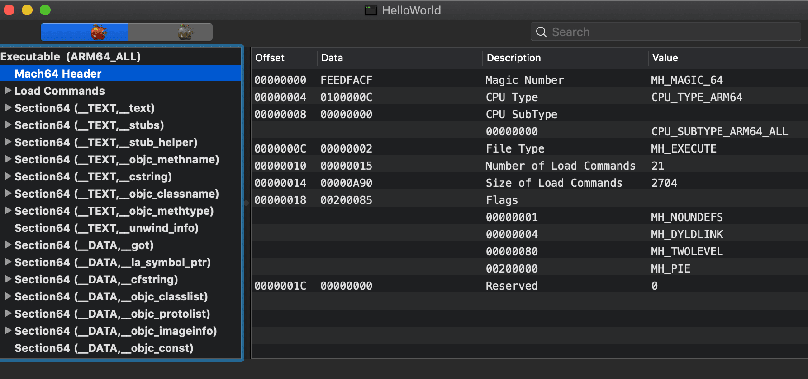

Mach-O 文件结构解析
Mach-O 文件是通往系统底层的基础，如果要深入理解 App 的启动加载原理，又或是想做深层次的 App 优化，熟悉 Mach-O 是非常必要的。
Mach-O (Mach Object)是一种 iOS 和 MacOS 上的原生二进制文件，类似于 Windows 里面的 PE 和 Linux 里面的 ELF，弄清楚 Mach-O 的结构和加载可以从根本上理解以下技术点：
- fishhook 原理
- 二进制重排加快 App 启动速度
- 常量字符串所属模块甚至所属函数的查找
- 闪退后，使用
.crash文件与dSYM进行符号恢复
常接触的 Mach-O 文件有：
- 编译产生的目标文件： 目标文件
.o - 静态/动态库文件：
.a、.dylib、.framework - 可执行文件：如 .app 包里面的二进制文件
dSYM文件
本文将从可执行类型的 64-bit Mach-O 文件来展开。来源参考：
- 头文件：
Xcode.app/Contents/Developer/Platforms/iPhoneOS.platform/Developer/SDKs/iPhoneOS.sdk/usr/include/mach-o/loader.h - 苹果文档
文件描述
概述
Mach-O 可以按照所包含的架构分类，如arm64、armv7、x86_64，一个 Mach-O 文件可以包含不止一个架构，该 Mach-O 将被称为通用二进制格式，即 FAT 二进制 ，通用二进制文件的结构和单架构的只有组织方式上有一些区别，根据苹果官网的一张老图，64-bit Mach-O 的主要组成：

Header: 位于文件的开始部分，包含二进制的标记信息：类型架构、CPU 类型、文件类型、加载命令的个数等，表明自身的文件属性，方便操作系统内核知道接下来能用什么方式来加载和处理该文件。其中文件类型有目标文件、可执行文件、动态库、动态链接器、dSYM等。Load Commands: 紧跟在Header的后面，它描述了segment（段）、符号表、系统动态链接库等的加载，每一个Load Commands都包含有命令类型、占用空间大小、名字等基本信息，不同的数据类型使用不同的加载命令表示。这是和加载（内存映射）相关的区域，操作系统内核为了提高加载效率减少页内碎片，要求每一个段被映射到虚拟内存后所占空间需要按照PAGESIZE进行对齐。Data: 这部分主要存放我们的程序指令和程序所用到的变量、类、方法等，另外还有和装载内存映射相关的 Rebase、Binding、符号表、字符串表等信息。
整体结构
整个文件的结构大致为：

Mach-O 结构
和 Mach-O 结构相关的数据结构在<mach-o/loader.h> 和 <mach-o/fat.h>中可以找到，其中 64-bit 的 Header 结构：
1 | |
紧接在 Header 后面的是 Load Commands，其中
LC_SEGMENT_64 数据结构如下1 | |
常见的加载命令cmd
| command 类型 | 解释 |
|---|---|
LC_SEGMENT_64 | 将当前段中的数据加载并映射到内存 |
LC_CODE_SIGNATURE | 获取应用的签名信息 |
LC_UUID | 当前文件的唯一标识，可与 dSYM 做匹配用做符号还原 |
LC_LOAD_DYLIB | 需要加载的动态库 |
LC_LOAD_DYLINKER | 用来加载动态库的程序，一般指明 /usr/lib/dyld |
LC_MAIN | 主程序的入口 |
LC_VERSION_MIN_IPHONEOS | 二进制要求的最低操作系统版本 |
LC_DYLD_INFO_ONLY | 描述重定向地址、弱引用地址、懒加载绑定等的偏移值信息 |
其中 LC_SEGMENT_64 的子类型有：
__PAGEZERO: 操作系统给当前程序预留的虚拟的“保护空间”，64-bit OS 的该空间大小为 4GB，该区域对于当前程序来说不可读不可写不可执行，即所有代码和数据的加载、执行、写入操作都只能在这 4GB 空间以后的地址上进行，否则将引发异常__TEXT: 保存程序的代码、OC 相关的类和方法信息、包含在双引号中的常量字符串信息，另外__TEXT还预留了动态动态链接库的符号修正信息(__stub)__DATA: 程序的数据段，可读可写__LINKEDIT: 包含动态链接相关的所有信息，之前提到的重定向地址、弱引用地址、懒加载绑定信息的索引都存储在这里
一个 Mach-O 二进制程序的 __DATA 和 __TEXT 段在更细的维度上会被分成不同的 section，这么设计的目的应该是为了提高内存使用效率。在同一个段的同一个 section 中可以使用相同的权限控制，例如对于 __TEXT 段包含代码和常量，是 readonly 的，对于动态链接库来说，操作系统内核在加载这部分数据到内存时，只需要加载一份就可以被所有的进程按需共享；而且由于是只读的，相对于可写可读的__DATA段，操作系统内核不用考虑是否因为数据污染而需要重新加载一个干净的 page；当内核需要收回部分内存时，对于 __TEXT 的页，可以直接标记为丢弃，而不用考虑是否要将变化后的数据保存起来。
这也暗示着我们写代码时尽量将不会发生变化的全局变量申明为 const 让其保存在只读区域，能提高内存访问效率，尤其是对于内存区域可能会被共享的动态库
结构验证
为了加深理解，下面将通过代码和 MachOView 来探索一个 Demo Mach-O 的 Header 和 Load Commands
环境准备
用 Xcode 新建一个 Mac Command Line 程序，名为 MachOExploration，然后再添加一个 iOS Single View App 类型的 target，名为 HelloWorld，然后在 TARGETS -> HelloWorld 的 Build Phases 中新建一个脚本New Run Script Phases，将 Shell 修改为 /usr/bin/python3，然后添加如下脚本
1 | |
这样运行 HelloWord 工程后，将会有一个二进制文件被复制到工程中，方便后续分析
读取 Header
读取文件时，为了合理利用内存，选择使用文件指针来操作文件而不是一次性将文件载入内存：
1 | |
由前面的分析可知，主要是基于文件的偏移和大小来得到指定数据，所以定义一个工具函数：
1 | |
- 读取 Header得到魔数为
1
2
3uint32_t *magic = load_bytes(fp, 0, sizeof(uint32_t));
NSLog(@"%X",*magic);
free(magic);FEEDFACF，即 64-bit Mach-O，且不需要大小端转换，接下来使用struct mach_header_64类型加载 Header 信息：上述宏定义可以在1
2
3
4
5
6
7
8
9
10
11
12
13
14
15void load_header_64(FILE *fp)
{
struct mach_header_64 *header = load_bytes(fp, 0, sizeof(struct mach_header_64));
NSLog(@"magic:%X",header->magic); // FEEDFACF
NSLog(@"cputype:%d",header->cputype); // 16777228 = CPU_TYPE_ARM64;
NSLog(@"cpusubtype:%d",header->cpusubtype); // 0 = CPU_SUBTYPE_VAX_ALL;
NSLog(@"filetype:%d",header->filetype); // 2 = MH_EXECUTE;
NSLog(@"ncmds:%d",header->ncmds); // 21
NSLog(@"sizeofcmds:%d",header->sizeofcmds); // 2704
/// 2097285 = (flags & MH_TWOLEVEL) | (flags & MH_PIE) |
/// (flags & MH_DYLDLINK) | (flags & MH_NOUNDEFS)
NSLog(@"flags:%d",header->flags); // 2097285
NSLog(@"reserved:%d",header->reserved); // 0
free(header);
}iPhoneOS.sdk/usr/include/mach-o/loader.h和MacOSX.sdk/usr/include/mach/machine.h查到
将 Demo Mach-O 拖入到 MachOView 中可以验证：

读取 Load Commands
Load Commands 紧跟在 Header 的后面，所有的 Load Commands 都“继承”自同一个基结构体，先用这个基结构体去套取数据以得到 load command 的类型，然后选用合适的类型读取完整的数据
1 | |
读取代码
1 | |
读取到的基结构后，使用完成的结构体套取完整数据：
1 | |
完整代码在这里，后续基本上都是这种模式，根据偏移值和定义来获取数据，这里不再继续解析了。
一点感触
读取 Mach-O 文件的精髓是偏移 + struct，struct 真是访问字节流内容的神器：
- 在探索 oc 底层结构时，打印
Class类型的isa指针时，由于某些原因（暂时未知）不能直接 lldb po 出来，这时可以定义一个和类对象一样结构的结构体来套取isa指针)。 - oc 的
block转成 c++ 代码后，有一个代表 block 的基本结构的类型struct __block_impl:还有代表当前完整内存结构的 block1
2
3
4
5
6struct __block_impl {
void *isa;
int Flags;
int Reserved;
void *FuncPtr;
};struct __main_block_impl_0(名字可能不一样)，这两个是包含关系：对于一块具体的 block 内存来说无论是通过1
2
3
4
5
6
7
8
9
10
11
12
13struct __main_block_impl_0 {
struct __block_impl impl;
struct __main_block_desc_0* Desc;
__Block_byref_age_0 *age; // block 捕获的变量，封装成了结构体
__main_block_impl_0(void *fp, struct __main_block_desc_0 *desc,
__Block_byref_age_0 *_age, int flags=0) :
age(_age->__forwarding) {
impl.isa = &_NSConcreteStackBlock;
impl.Flags = flags;
impl.FuncPtr = fp;
Desc = desc;
}
};struct __block_impl *还是struct __main_block_impl_0 *都是可以合法访问的，区别是当涉及到基本 block 属性的操作时使用struct __block_impl *，当涉及到具体 block 属性操作时使用struct __main_block_impl_0 *，最大化地精炼和减少额外开销 - 一个基于汇编的中心重定向框架中讲到，为了在汇编层面上精确无误地访问之前构建的两页内存中的数据，设计了特殊的结构体，通过该结构体套取特定偏移位置的数据，设计非常巧妙
本博客所有文章除特别声明外，均采用 CC BY-SA 4.0 协议 ，转载请注明出处！